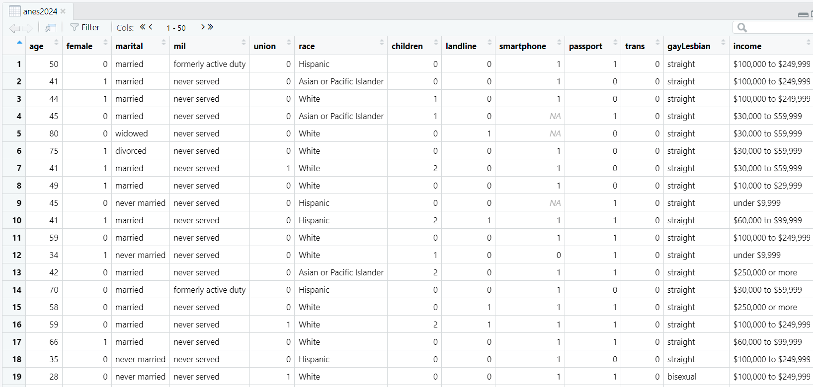

Chapter 2 Welcome to the tidyverse
Here is a review of existing methods.
2.1 Installing packages
One of the nice things about R is that users can create their own libraries of commands. These can be extremely powerful and useful tools. There is an excellent set of tools that are in a library called the “tidyverse.” To install the tidyverse on your local computer, first, make sure that your computer is attached to the internet. Second, enter this command into the Console of RStudio and press Enter:
install.packages("tidyverse")Once you hit enter, you should see some action in your Console (what it says will depend on what version of R you are using). Some of it might be in red, but don’t worry about it. Now you have installed the tidyverse set of libraries of commands! We will regularly work with the tools that this library makes possible for us.
2.2 Exploring dataframes
To begin exploring dataframes, open the project that you made in the last lab. There are two ways that you can do this:
- You can open RStudio, go to File, open project, and navigate to the file called Scope and Methods labs.
- You can navigate to the folders that you made last lab and double click the file called “Scope and Methods Labs,” like the circled file below:

When the project opens up, you should see three objects in the Environment: anes2020, states2010, and world. If you don’t see those files, follow the instructions in section 1.5, to load them.
Those files are the dataframes that we will be doing most of our analysis of in this class. As I mentioned in the last chapter, a dataframe is essentially a group of vectors attached to one another, and is an extremely useful way of storing data for analysis. Here is a quick summary of those three dataframes:
- anes2020 is a snippet of the American National Election Survey, a survey that has been conducted at every election since 1948 by scholars based out of the University of Michigan and Stanford. This snippet that I created only looks at the 2020 election. You can find more information about ANES at their website, https://electionstudies.org/
- states2010 is a dataframe with information about US states. It is a snippet of a large dataset produced by scholars at Michigan State University. You can find more information here: http://ippsr.msu.edu/public-policy/correlates-state-policy
- world is a snippet of a dataset about most of the countries of the world gathered from different sources by the great Harvard political scientist Pippa Norris. You can find the whole dataset here: https://www.pippanorris.com/data
To begin, let’s take a look at the anes2020 dataset using the “View()” command (note that “View” is capitalized, unlike many R commands). Enter this command into the Console and then hit Enter:
View(anes2020)When you hit enter, the following should come up on your screen: 
This is a neat visualization of the ANES survey. Each row represents one case. Since ANES is a survey, each case is a single individual who took the survey. Each column represents a variable: something that the survey designers wanted to measure about the people taking the survey. Look at row #1. That describes a person who is 46 years old, divorced, with a bachelor’s degree, who never served in the military, etc. If you want to see what all of the variables mean, you can look at the file anes2020 codebook, which you should have downloaded in chapter 1.2 and put in your Codebooks folder.
Now let’s say that we want to know a bit more about the age variable. How old was the average person that took our survey? To answer, we need to learn two more R commands: the “$” and the command “summary.” The “$” command helps us identify single columns within a dataframe. So, if we just want to see the age column, you can type this in the Console:
anes2020$ageWhen you do this, you will see that R gives you the age of every single person who took the survey. Kind of interesting, but not all that useful. So, let’s try something else. Type summary(anes2020$age) into the Console, and you get these results:
summary(anes2020$age)## Min. 1st Qu. Median Mean 3rd Qu. Max. NA's
## 18.00 37.00 52.00 51.59 66.00 80.00 348This gives you a lot of useful information! You can see that the youngest age in the dataframe is 18 (likely because they were not surveying minors), and the oldest is 80. If you look in the codebook, you will see that the survey takers coded everyone 80 and over as 80. You will also see that the median age is 52 and the mean is 51.59. And, you will see that there are 348 NAs. “NA” is what R reports when it does not have data in a particular variable. So, there are 348 cases for whom we don’t have data on their ages.
The “summary” command is very useful with numeric data, like age. However, what if you have a variable like “marital,” which measures the marital status of individuals? The mean and median of this variable would not be meaningful, but we might want to know how many married, single, divorced, etc. people there are in our dataframe. To get this information, we can use the “table” command, like this:
table(anes2020$marital)That command generates this output
##
## divorced married never married separated widowed
## 1221 4322 1951 163 567In other words, our dataframe has 1221 divorced people, 4322 married people, 1951 never married people, etc. Useful stuff!
2.3 Organizing your scripts
As you use R you will generate a lot of script files, and if you are not careful you might find yourself forgetting what some of your scripts are for. This is where the # characters can be really helpful. You can leave notes to yourself.
This is a nice way to add headers to R script files:
####################################
# Your name
# Project, Purpose of R file
# Date started : Date last modified
####################################Then, when you open a script file, you can see right away when you made it and what it is for. You can customize this header as is helpful to you.
2.4 Welcome to the tidyverse
Perhaps the code package that has had the biggest impact on how people do R in the last few years had been the “tidyverse”. To take advantage of this great library which you installed in section 2.1, you first have to activate it. You will have to do this step every time that you open R, so I often put it at the top of my script files.
To follow along, open a new script file and save it in your scripts folder as “chapter 2 practice.” Copy and paste this onto the page:
####################################
# Your name
# 20093 Chapter 2, Practice exercises
# Date started : Date last modified
####################################
#libraries------------------------------------------
library(tidyverse)Now select all the text on this page, run it, and then save it. You should see something like this in your Console:
Warning: package 'tidyverse' was built under R version 4.1.2
v ggplot2 3.3.5 v purrr 0.3.4
v tibble 3.1.3 v dplyr 1.0.7
v tidyr 1.1.3 v stringr 1.4.0
v readr 2.0.0 v forcats 0.5.1Don’t worry about the error messages. The list of packages are the libraries of commands that come with the tidyverse library. The two that we will be using the most are ggplot2, which is terrific for graphing, and dplyr, which is great for managing data. Since you have installed the tidyverse, you will not have to install those packages separately – you already have them.
Now that we have access to the tidyverse, we will use a few of the commands that are available to us through the dplyr package to get a better look at some of our data. Before we can do that, however, we need to learn about the somewhat strange feature of dplyr, the “pipe.” The pipe is this set of characters:
%>%You can always type those three characters to build a pipe, but you can also type Ctrl-Shift-M on a Windows machine or Cmd + Shift + M on a Mac.
The pipe means “and then.” Let’s try an example, using the glimpse() command that is available in the tidyverse.
Try entering this command into your script file:
anes2020 %>%
glimpse() #taking a different kind of look at our dataframeHighlight that text and run that command. You should see a lot of output in the Console. If you scroll up a bit in the Console, you should see something like this (this is just the first 12 variables in this dataframe; you will have access to more on your screen):
## Rows: 8,280
## Columns: 12
## $ age <int> 46, 37, 40, 41, 72, 71, 37, 45, 70, 43, 37, 55, 30, 38, 41, 66, 54, 55, 62, 80, 31, 80, 24, 55, 59, 73, 72,~
## $ marital <chr> "divorced", "married", "married", "married", "widowed", "divorced", "married", "married", "married", "separ~
## $ edu <ord> "ba", "some college", "high school", "associate degree", "md, phd, or jd", "some college", "associate degre~
## $ military <chr> "never served", "never served", "never served", "never served", "never served", "never served", "never serv~
## $ union <dbl> 0, 0, 0, 0, 0, 0, 0, 0, 0, 0, 0, 0, 0, 0, 0, 0, 0, 1, 0, 0, 0, 0, 1, 0, 0, 0, 0, 0, 0, 0, 0, 0, 0, 1, 0, 0,~
## $ race <chr> "Hispanic", "Asian or Pacific Islander", "White", "Asian or Pacific Islander", "Native American", "White", ~
## $ children <int> 0, 1, 2, 1, 0, 0, 3, 0, 0, 0, 2, 2, 1, 2, 1, 0, 2, 2, 0, 0, 0, 1, 0, 3, 0, 0, 3, 0, 0, 2, 2, 2, 0, 0, 0, 0,~
## $ sex <dbl> 0, 1, 1, 0, 0, 1, 1, 1, 1, 0, 1, 0, 1, 0, 1, 0, 0, 0, 1, 1, 0, 1, 0, 0, 1, 0, 1, 0, 0, 0, 1, 0, 1, 0, 1, 1,~
## $ lgbtq <chr> "straight", "straight", "straight", "straight", "straight", "straight", "straight", "straight", "straight",~
## $ income <ord> "$110,000 or more", "$65,000-$109,999", "$65,000-$109,999", "$25,000-64,999", "$110,000 or more", "under $2~
## $ guns <int> 3, 0, 0, 0, 0, 0, 0, 0, 1, 2, 0, 1, 0, 0, 0, 2, 1, 0, 0, 0, 1, 0, 2, 0, 0, 4, 1, 0, 4, 1, 0, 0, 0, 0, 0, 4,~
## $ partyid <ord> strong republican, independent, independent democrat, not very strong republican, independent, independent ~This is giving us information about the dataframe anes2020. At the top, you can see that the dataframe has 8,280 rows. Since this is a survey, and each row represents one person that was surveyed, that tells us that the anes2020 dataframe represents a survey of 8,280 people. On the output above, you can see that the dataframe has 12 columns (because I told R to only display the first 12.) If you ran the command, you should see that the full dataframe has 68 columns, which means that the dataframe measures 68 variables. The glimpse() command in the tidyverse gives us a bit of information about each of these variables. On the left of the output you can see all of the variable names (age, marital, etc.). And then just to the right of that you can see the way that R is classifying those variables (
Many dataframes are quite large, and you might find yourselves wanting to focus on a few variables at a time. The command select() can be helpful for this. Let’s say that you want to focus in on how many guns people have in their homes and their feelings about the NRA. In that case, you would want to select the variables “ft_nra” and “guns”, which you can do like this:
anes2020 %>%
select(guns, ft_nra) #focusing in on a few variables2.4.1 A warning about the select() command
Unfortunately, some of the packages that we will be installing in future labs also use the command select. If you ever run “select” and have more than one of these packages installed, R will give an error. When you get that error, you can add “dplyr::” before select(), to tell R to look at the select() in the dplyr library (which comes with the tidyverse). Here is how the above command would look with that modification:
anes2020 %>%
dplyr::select(guns, ft_nra) #focusing in on a few variablesIf you run either of these commands (with or without the dplyr::), and scroll up a bit in the Console, you will see output that begins like this:
## guns ft_nra
## 1 3 50
## 2 0 50
## 3 0 0
## 4 0 NA
## 5 0 70
## 6 0 15
## 7 0 85
## 8 0 50
## 9 1 NA
## 10 2 50This is a way of displaying dataframes that is unique to the tidyverse called a “tibble.” Each row represents a case, and each column represents a variable (except for the leftmost column, which is just the case number. Looking at case #1, you can see that that person owns 3 guns, and rates the NRA 50 out of 100. Case #2 also rates the NRA 50, but owns no guns.
Notice that the dataframe that had been so large before, with 68 columns, now only has 2 columns. If you want to use that glimpse() command from above to just get summary information about each of our variables, you can use a second pipe (%>%) like this:
anes2020 %>%
select(guns, ft_nra) #focusing in on a few variables%>%
glimpse() #taking a different kind of look at our dataframeWhat if we want to see what the people in our sample with the most and fewest guns thought about the NRA? To do that, we can arrange our dataframe from smallest to largest or from largest to smallest on any of our variables. Or, with variables that include text, we can sort according to alphabetic or reverse alphabetic order. We can use the arrange() command to do that:
anes2020 %>%
select(guns, ft_nra) %>% #focusing in on a few variables
arrange(guns) #sorting this variable from smallest to largestWhen we run the above command, the Console shows us the feeling about the NRA by the people with the fewest guns first, and then on to the people with more guns. But what if we want to see the largest values on the “guns” variable first? To do that, we need to use desc() to modify arrange() like this:
anes2020 %>%
select(guns, ft_nra) %>% #focusing in on a few variables
arrange(desc(guns)) #sorting this variable from largest to smallestFinally, combining all of the commands that we learned today, we can use glimpse() to see information about each of our variables in this simplified version of our dataframe. To do that, we will need a third pipe:
anes2020 %>%
select(guns, ft_nra) %>% #focusing in on a few variables
arrange(desc(guns)) %>% #sorting this variable from largest to smallest
glimpse() #taking a different kind of look at our dataframe2.5 Review of this chapter’s commands
| Command | Purpose | Library |
|---|---|---|
| install.packages(““) | To install new packages, or libraries of R commands. You have to do this only once on your computer per library when your computer is connected to the internet so that it will download the relevant library. | Base R |
| View() | Displays a dataframe as a spreadsheet. Notice that the word “View” is capitalized. | Base R |
| summary() | Displays summary information (like mean and median) about a numeric variable. To call a variable, use a dollar sign. So, like this: “summary(dataframe$variable)” | Base R |
| table() | Displays the number of times each value of a variable appears in a dataframe. Most useful for variables with a relatively small number of possible values. To call a variable, use a dollar sign. So, like this: “table(dataframe$variable)” | Base R |
| library() | To ask R to load a library into your session. You must use this command every time that you open R if you want it to use a particular library. | Base R |
| %>% | The “pipe.” Useful with manipulating data in the tidyverse. | dplry (tidyverse) |
| glimpse() | Display general information about a dataset, including looking at the variable names, types, and a few values in rows. Often preceded by a pipe. | dplyr (tidyverse) |
| select() | Allows you to select a few variables to focus on. Often preceded by a pipe. You can use the variable names without dollar signs. | dplyr (tidyverse) |
| arrange(desc()) | Sorts a dataframe from largest to smallest values of a particular variable (or in reverse-alphabetical order). Often preceded by a pipe. You can use the variable names without dollar signs. | dplyr (tidyverse) |
2.6 Review exercises
Let’s practice some of the things that we learned in this chapter.
- Create a new R script called “Chapter 2 Exercises,” and save it to your R scripts folder. Make a header for the script based on the description from section 2.3. Use the library() command to load the tidyverse.
- Look over the codebooks from our three datasets: anes2020, states2010, and world, and choose a variable that you are interested in. Using either the table() or the summary() command, generate some information about the values of that variable. If you the summary() command does not give you useful information, use the table() command, and vice versa.
- Make one or more observations about that variable from question 2.
- Choose a second variable from the same dataframe. Use a pipe (%>%) and the select() command, select only the variable from question 2 and the variable from this question.
- Use a pipe to modify the command from step 4, and using the arrange() command (with or without desc()), arrange the dataframe by one of the two variables.
- Make one or more observations about that output from question 5.